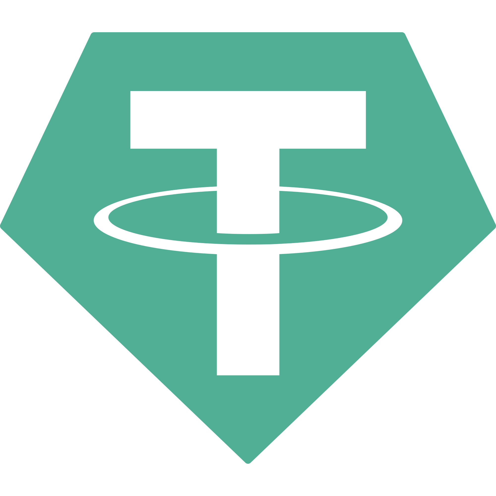

Portofolio saya

$BITCOIN
Coin ini adalah pendekatan personal saya dalam membangun portofolio berbasis Bitcoin (BTC) sebagai aset utama. Saya menggunakan analisis teknikal berbasis Smart Money Concept untuk mengidentifikasi zona akumulasi institusional, serta memanfaatkan on-chain metric untuk mendeteksi momen akumulasi yang optimal. Tujuannya adalah memaksimalkan pertumbuhan jangka panjang dengan risiko terukur.

$USDT
Coin ini berfokus pada penggunaan stablecoin USDT sebagai alat lindung nilai terhadap volatilitas pasar kripto. Saya mengembangkan sistem pengelolaan alokasi aset yang dinamis, memindahkan sebagian kapital ke USDT saat pasar menunjukkan tanda-tanda distribusi atau fase overbought. Ini adalah bagian dari strategi perlindungan modal dan kesiapan untuk re-entry saat pasar korektif.